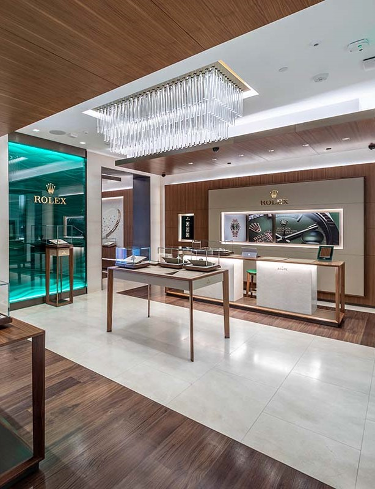
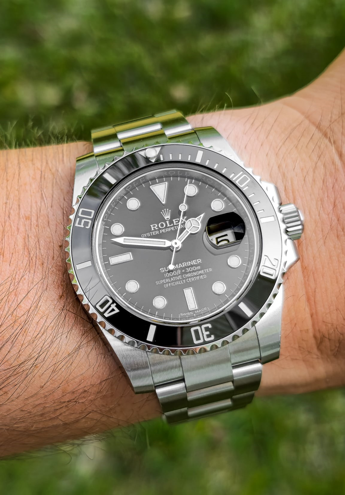
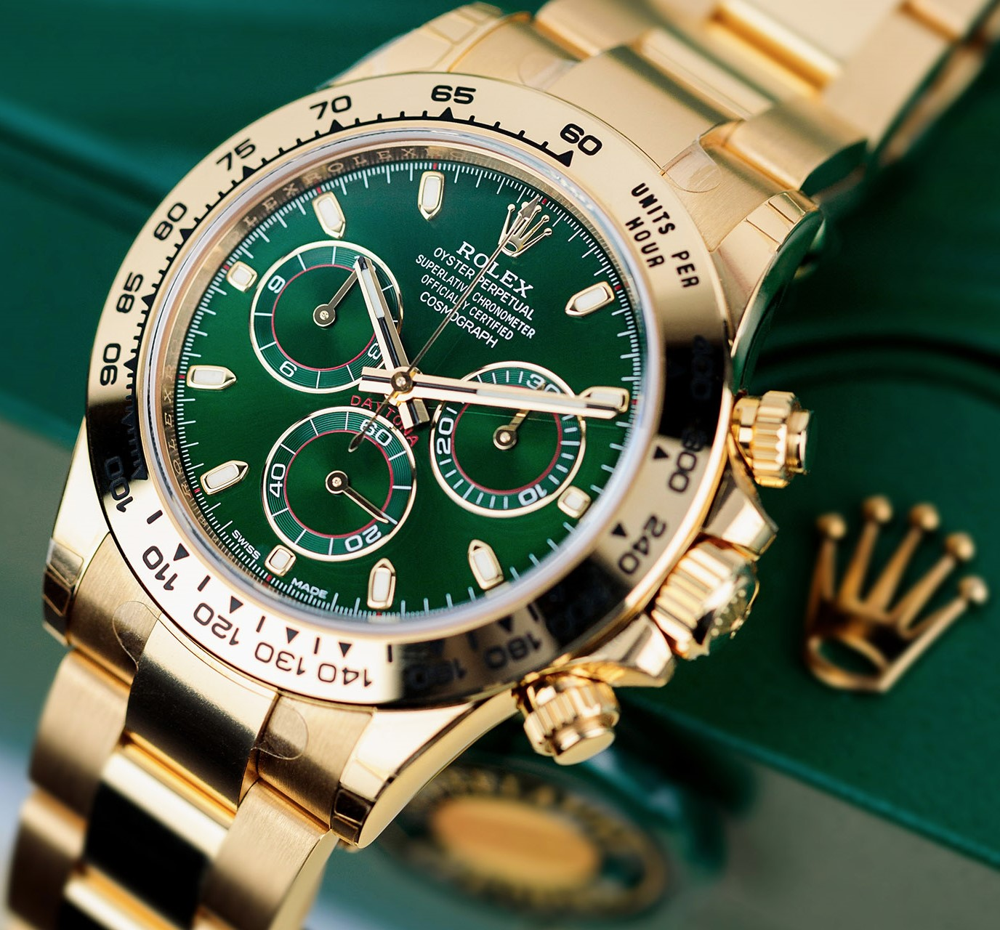

Contact
+27 011 854 9767
Email: rolex@gmail.co.za

The history of Rolex is inextricably linked to the visionary spirit of Hans Wilsdorf, its founder. The young man entered the world of Swiss watchmaking in the early 20th century. In 1910, a Rolex watch was the first wristwatch in the world to receive the Swiss Certificate of Precision, granted by the Official Watch Rating Centre in Bienne

Directions
You can find Rolex (Shop 206-210) after Starbucks Coffee Shop (Shop 101) in Accessories Avenue. Enjoy your shopping adventure at Pine City Mall!